Ghana

Netflix cuts 1,000 global jobs as streaming growth slows
The streaming service is cutting roughly six per cent of its global staff as competition from free video platforms increases.

KNUST announces new reopening dates for 2026 academic year
Freshmen arrive in Kumasi on Thursday, 15 October, while continuing students return on Saturday ahead of Monday lectures.

GRA Clarifies Digital VAT System Will Not Add New Tax
Tax officials confirm that 92 streaming platforms already charge the levy, while 100 newly identified foreign services will be added gradually.

Fire at Mallam GRIDCo substation disrupts power in parts of Accra
Electricity supply is returning to parts of Accra after an early morning fire damaged a major transformer at the Mallam substation.
BusinessGoldBod refines up to 90 per cent of gold in Ghana, CEO tells Parliament
The Ghana Gold Board has recovered GH¢38.7 million in debts while expanding local jobs through 24-hour refinery operations.
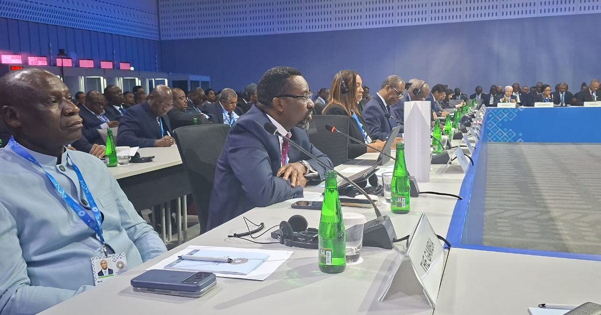
Ghana delegation attends IMF World Bank meetings in Bangkok
Finance Minister Cassiel Ato Forson and Central Bank Governor Johnson Asiama are courting global investors ahead of the 2027 budget.
EducationGTEC orders public universities to reopen by October 16
The Education Ministry directs public universities to resume lectures on October 19 as government moves to resolve administrators’ strike.
BusinessIMF raises Ghana 2026 growth forecast to 5.7 percent
Lower inflation projections offer potential relief for household budgets, transport costs and local trading across all regions of Ghana.
BusinessMoody’s upgrades Ghana credit rating to B3 with stable outlook
Lower domestic borrowing costs and high gold export prices helped drive the rating upgrade for the nation.
CommunityKumasi market fires prompt emergency service call for new equipment
Firefighters save dozens of shops at Aboabo Market while fire officials warn that ageing vehicles threaten emergency responses in Kumasi.
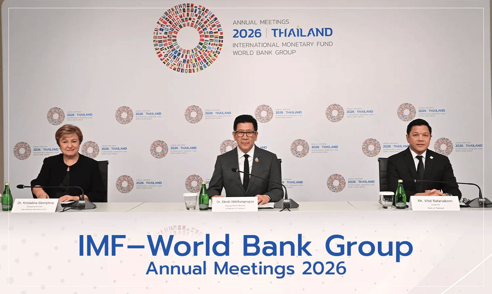
Finance Minister Dr Cassiel Ato Forson leads delegation to IMF meetings in Bangkok
Ghana is seeking foreign investment for jobs and infrastructure after transitioning from a 3 billion dollar IMF bailout to a non-financing policy agreement.

DVLA adds six local languages to driving theory test system
Applicants across Ghana can now take their driving examination in Twi, Ga, Ewe, Dagbani, Nzema or Hausa.
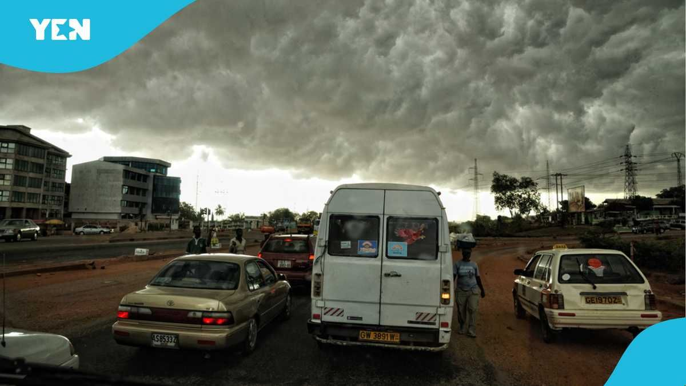
Ghana faces morning mist and evening thunderstorms on Monday 12 October
The Ghana Meteorological Agency warns drivers of poor morning visibility and advises residents in northern and middle sectors to prepare for wet weather.
EducationPublic basic schools resume classes across Ghana as teachers suspend strike
Pre-tertiary teacher unions suspend their nationwide strike following agreements with government over promotion arrears and allowances.
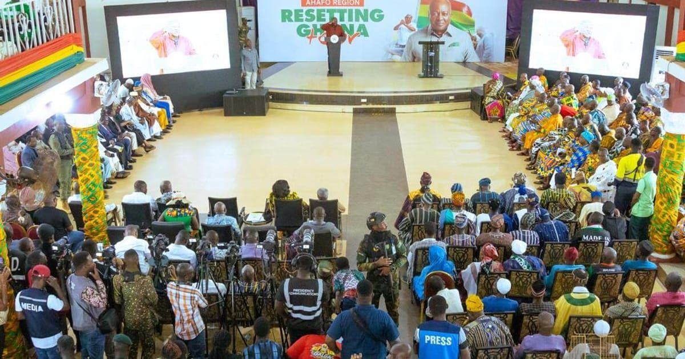
US seeks talks with Ghana to review rejected health compact
Washington wants discussions to modify or strip disputed clauses from a proposed 109 million dollar health funding package.
EducationUG and KNUST postpone 2026/2027 academic year reopening over GAUA strike
Public universities in Accra and Kumasi delay campus resumption indefinitely as administrator strike actions disrupt operations.
BusinessFinance officials gather in Bangkok for IMF and World Bank annual meetings
Global economic risks, rising debt burdens, and war will focus discussions at the annual financial gathering in Thailand.
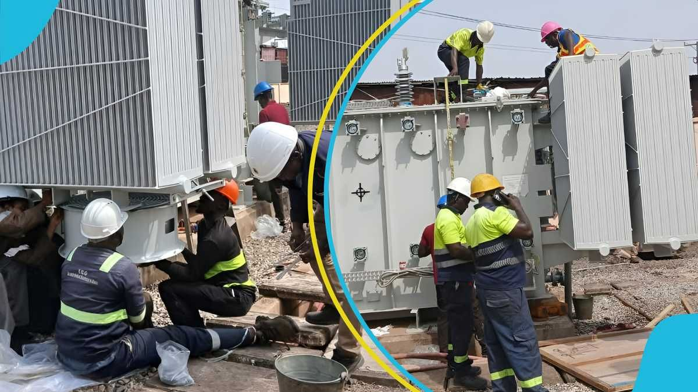
ECG announces planned Accra power cuts as Ashanti fault causes outages
Maintenance work in Greater Accra will cause eight-hour outages from 11 to 16 October while engineers repair a bulk supply point in Ashanti.
CommunityUN expert urges Ghana to strengthen Rent Control Department against rent hikes
A United Nations housing envoy says equipping rent regulators will protect low-income families from soaring housing costs in urban areas.
BusinessFire destroys 15 shops at Kumasi Central Market
Investigators suspect a power restoration fault triggered the Friday night blaze near Aboabo Station in the Ashanti Region.
BusinessAto Forson promises New Economy will tackle unemployment
Finance Minister Dr Cassiel Ato Forson tells university students that new economic policies will aid graduates, farmers and small enterprises.
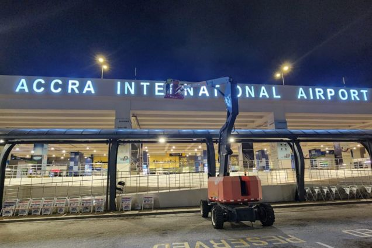
GRA denies airport extortion and clarifies customs duty payment
The revenue authority says eight hundred cedis collected during a system outage at Accra airport was fully remitted with an official receipt.
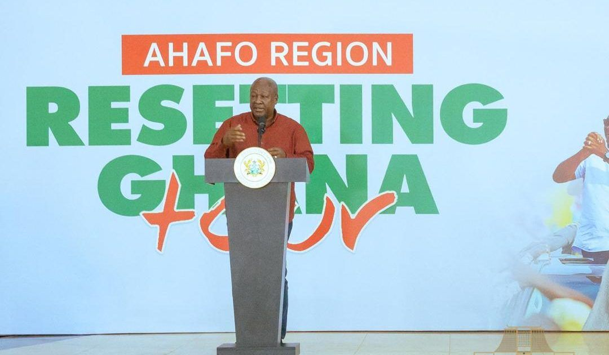
US seeks fresh talks with Ghana over rejected 109 million dollar health deal
American officials want to modify controversial clauses that led Cabinet to turn down a five-year healthcare assistance package.
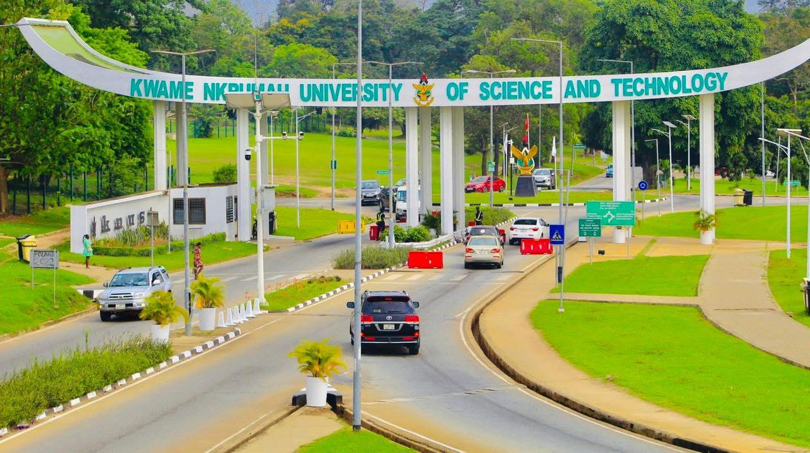
KNUST postpones 2026/2027 academic year reopening indefinitely
The university suspended its scheduled 13 October resumption date as a nationwide administrators’ strike halts campus operations.

Vegetable prices crash in Nabdam District as harvest glut hits farmers
A sharp drop in tomato, pepper and okra prices brings relief to buyers in the Upper East Region while leaving local farmers struggling to recover costs.
EducationUniversity of Ghana unions march against security outsourcing plans
Four staff unions at Legon are demanding an immediate halt to plans to hand campus security over to a private firm.
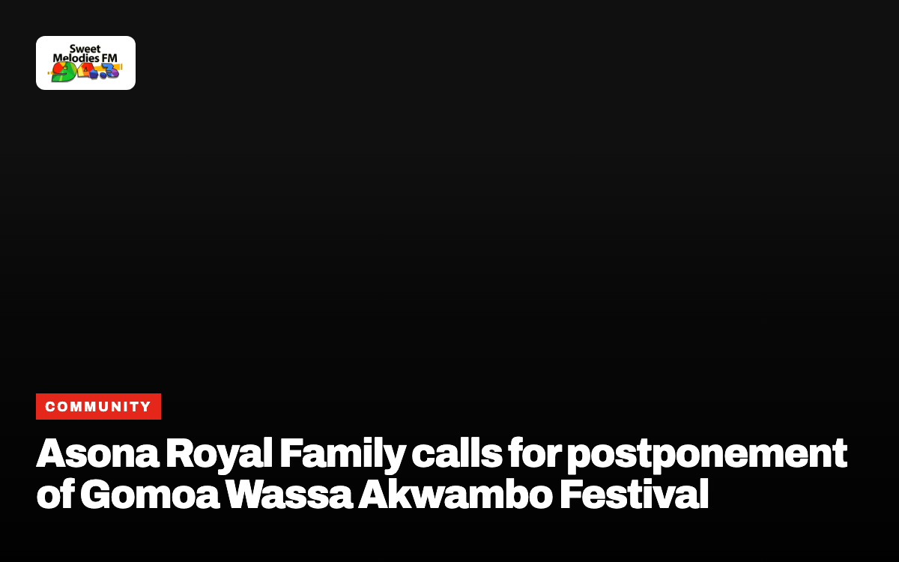
Asona Royal Family calls for postponement of Gomoa Wassa Akwambo Festival
News Ghana reports that royal family members have asked organizers to delay the upcoming traditional Akwambo festival.
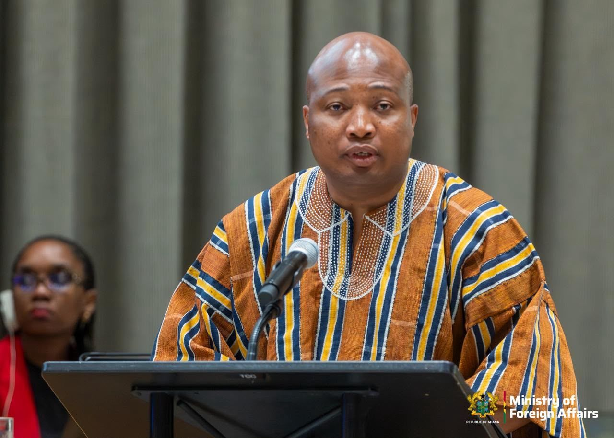
Ghana wins second UN Human Rights Council term with 173 votes
Member states vote to keep Ghana on the global human rights body for a three-year period starting in 2027.
HealthPresident Mahama opens 85-bed block at Police Hospital
Two new ambulances and extra beds will improve emergency healthcare for security officers and residents in Greater Accra.
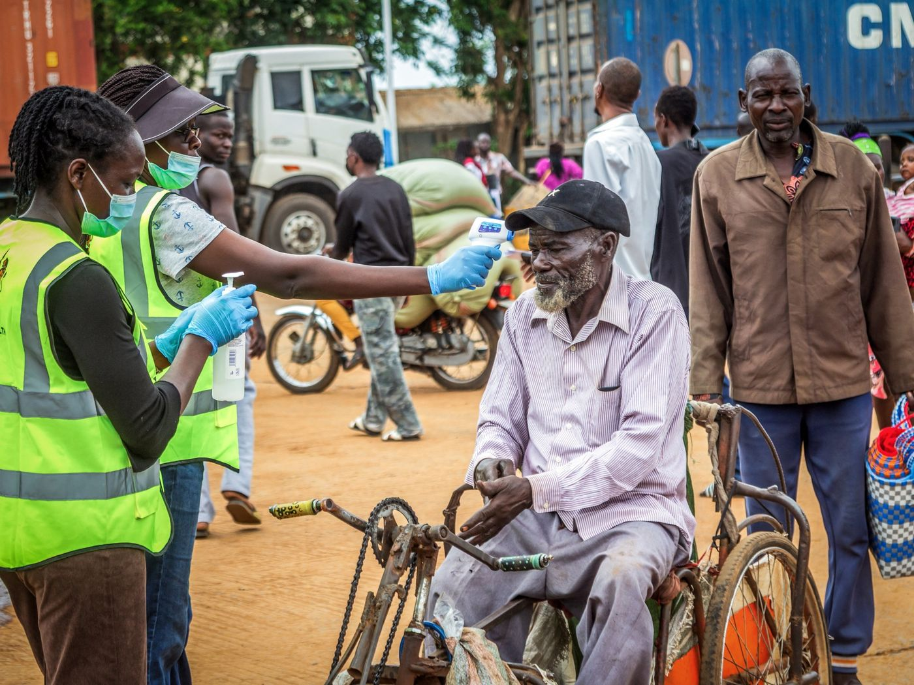
Kenya confirms second Ebola case in relative of first patient
Health authorities in Nairobi isolated the 39-year-old relative before symptoms appeared following contact with the nation’s index patient.
BusinessPetrol and diesel prices expected to fall as LPG surges
Lower pump costs will ease transport spending across Ghana, but higher cooking gas prices will increase daily household expenses.
PoliticsAbass Osabutey enters race for NDC Deputy National Organiser
The former security head for the party’s Ashanti Region campaign says he will focus on rebuilding branch structures ahead of 2028.
BusinessGhanaian banks to collect 20 per cent digital tax from October 15
The Ghana Revenue Authority has directed commercial banks to collect statutory taxes on foreign streaming and software subscriptions.
PoliticsHigh Court dismisses Afenyo-Markin defamation suit against Sammy Gyamfi
The court struck out the GH¢15 million case over procedural errors without ruling on whether the statements were defamatory.
BusinessGhana Ready For Economic Take-Off, Says Finance Minister
Dr Cassiel Ato Forson says economic stability must be protected as Ghana moves past crisis.

Mahama asks Western North chiefs to back galamsey fight
The government plans a 400 million cedi allocation for water guards as illegal mining drags students into pits.
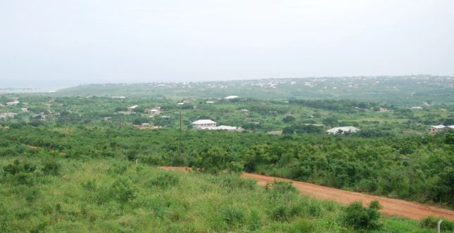
Customary ownership accounts for 80 per cent of Ghana land, Lands Commission says
Disagreements over family leadership and double sales of plots continue to create risk for home buyers and developers across the country.

Agona Nkwanta police arrest husband over viral assault video
A thirty-year-old farmer in the Western Region faces court after video showed him beating his wife.
PoliticsNPP demands withdrawal of new Electoral Commission deputy chairperson
The opposition party alleges political bias, while government argues the appointment restores balance to the electoral body.
PoliticsSuame MP John Darko denies wrongdoing in GH¢27m SIC probe
The lawmaker reported to EOCO in Accra before his legal team clarified his past professional ties to Equity Savings and Loans.
EducationGreta Thunberg joins French high school student protests in Paris
Swedish activist Greta Thunberg has joined students demonstrating across France over poor school conditions, teacher shortages, and crowded class schedules.
PoliticsMajority and Nana B clash over passport dispute and evacuation spending
The NPP National Vice Chairman denied lobbying to keep a service passport while raising questions about Foreign Ministry expenditure.
EducationEducation Minister orders suspension of Obuasi SHS headmaster over claims
The Ghana Education Service and police have been asked to investigate Zakaria Abdulai following a media report.
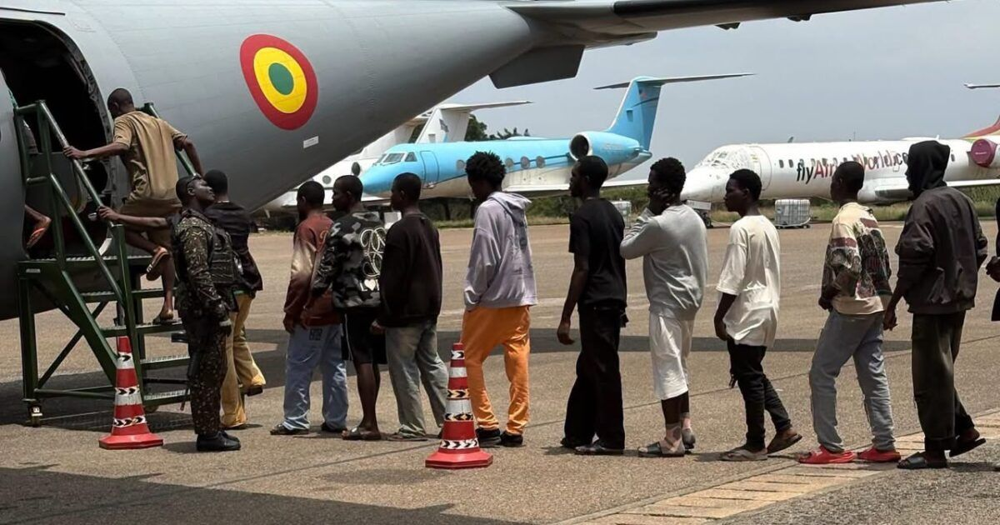
Ghana repatriates 120 Nigerians rescued from cybercrime operations
Security agencies send home victims forced into online scams while preparing eight suspects for prosecution in Accra.
BusinessAmerican Global Strategies and Julie Bishop form strategic partnership
Two advisory firms in the United States and Australia have partnered to offer geopolitical guidance to corporate executives.
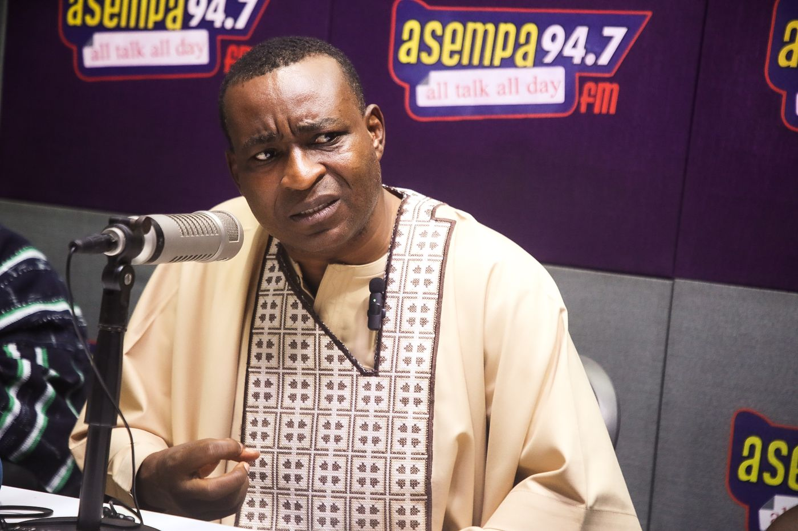
Wontumi pleads not guilty to amended charges in Exim Bank case
The former NPP Ashanti Regional Chairman faces five counts over an alleged financial loss of more than GH¢30 million to the state bank.
PoliticsPresident Mahama Swears In Two Electoral Commission Deputy Chairpersons
The appointments of Emelia Agbenyo and Dr Joseph Asamoah fill key vacancies at Ghana’s electoral body following recent leadership exits.
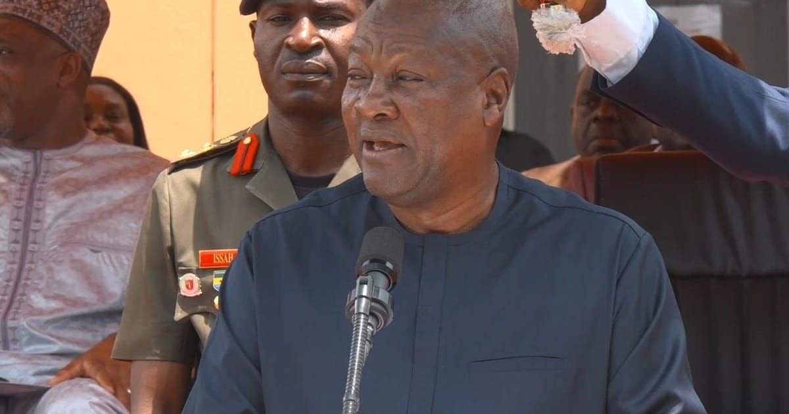
Mahama opens new 85-bed facility at Accra Police Hospital
The addition features the facility’s first paediatric unit and precedes GH¢500 million in planned 2027 budget allocations for police housing and medical expansion.
EducationGhanaian Hato Anita Emefa Earns Honours In South Korea Exam
A Ghanaian citizen has achieved Byeonggwa honours in South Korea’s first civil service examination for foreign residents.
CommunityPolice officer arrested after Ritz Junction shooting injures two in Accra
A police sergeant faces investigation after a struggle over a pistol at Ritz Junction sent two bystanders to hospital.
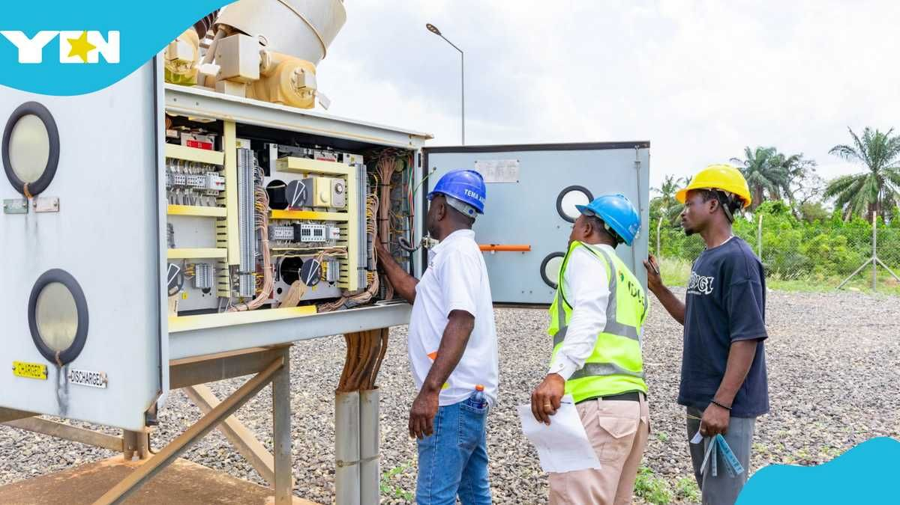
ECG plans eight-hour power outages across four regions for maintenance
Communities in Greater Accra, Volta, Ashanti and Central regions face daily electricity cuts from Monday to Thursday.
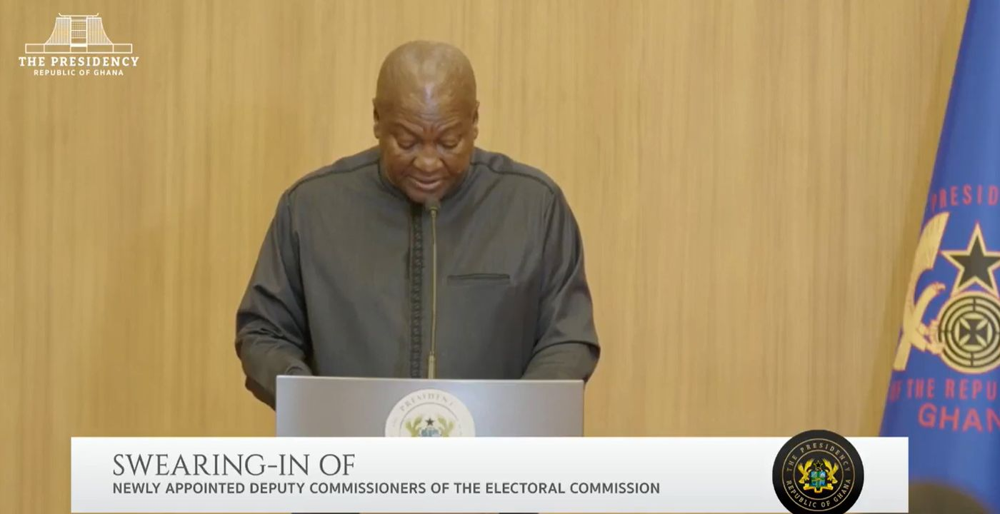
President Mahama swears in two Electoral Commission deputy leaders
Emelia Afi Agbenyo and Dr Joseph Kwaku Asamoah take office at the seat of government to complete the electoral body’s top executive team.
PoliticsNPP orders parliamentary hopefuls to suspend early campaigning
The ruling party warns that prospective candidates flouting the ban face possible disqualification ahead of upcoming parliamentary primaries.
CommunityDr Abena Asomaning launches three books and art auction for prison support
Proceeds from the Accra event will help the Angel-Zoe Foundation train and reintegrate former prisoners into Ghanaian society.
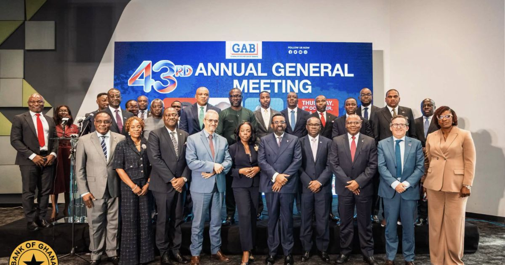
Ghanaian bank assets reach GH¢500.2 billion as all 23 banks meet capital rules
Central bank governor announces total assets rose 20 per cent while non-performing loans dropped across the financial sector.

President Mahama ends two-day inspection tour of Ahafo Region
The President inspected health facilities, road projects and a major poultry processing facility in Bechem.
PoliticsMinority calls for audit of GH¢49.72m South Africa evacuation costs
Lawmakers say official documentation leaves over GH¢16.4 million in emergency foreign ministry expenditure unverified.
CommunityGender Ministry to monitor children of Nana Akua Addo after abuse report
Social welfare officers step in following police inquiries into reported domestic violence involving fashion icon Nana Akua Addo and her husband.
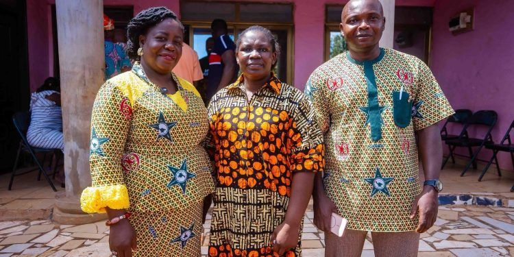
GRNMA pledges legal support to nurse facing false news trial
Nurse Salomey Awiti Baffoe has pleaded not guilty to abetment charges linked to online video distribution in the Bono Region.
HealthScientology Network broadcasts World Mental Health Day marathon
The global television event highlights issues around psychiatric practices and mental health rights.
PoliticsPresident Mahama inspects Asunafo North Farmers Services Centre
The government is constructing 15 centres across agricultural districts as part of a national plan to establish 50 machinery hubs for farmers.
CommunityGovernment to import electric wheelchairs for persons with disabilities
President John Dramani Mahama announced the pilot program during a public gathering in Goaso, Ahafo Region.
PoliticsSamuel Nartey George called to Ghana Bar
Communications Minister Samuel Nartey George receives congratulations from Arnold Kavaarpuo following his call to the bar.
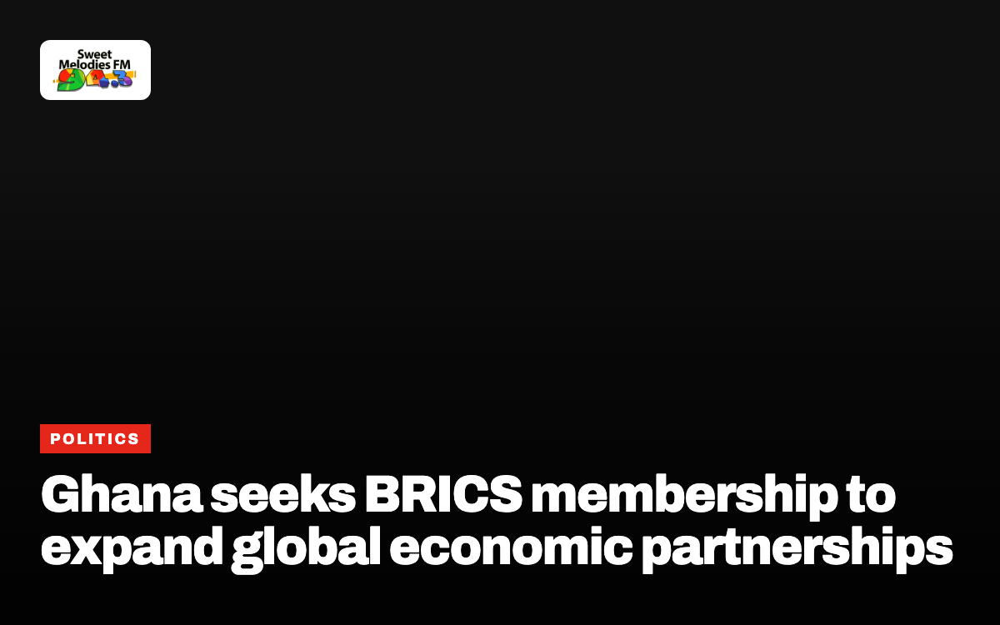
Ghana seeks BRICS membership to expand global economic partnerships
Cabinet approves a plan to apply for BRICS membership to widen trade opportunities beyond Western markets.
PoliticsNigerian actor Harry B rates John Mahama as best African leader
Nollywood figure Harry B praises former president John Mahama and declares support for the National Democratic Congress.
EducationECOM Ghana launches school farming clubs in Adansi North
The initiative aims to recruit young pupils into agribusiness across 40 basic schools to address Ghana’s rising average farmer age.
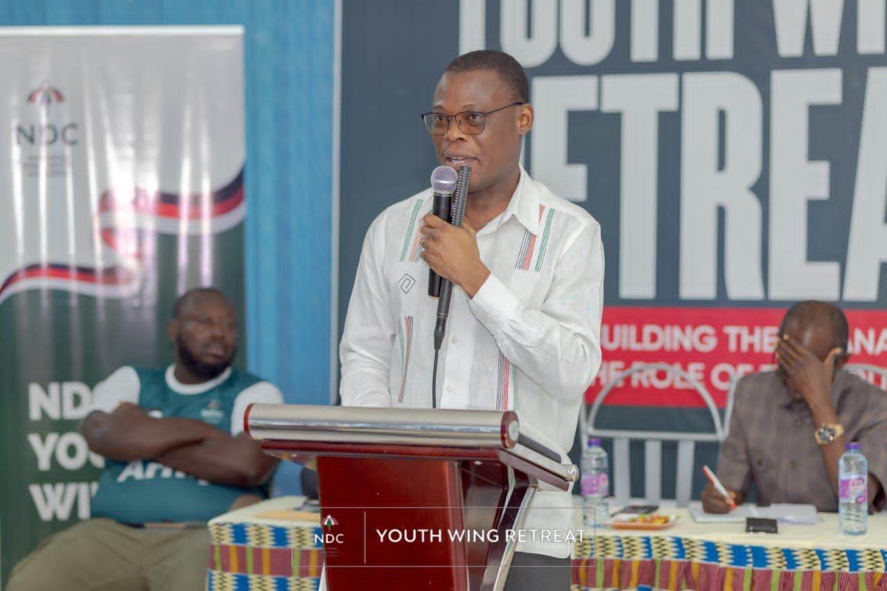
NDC orders aspirants to remove oversized campaign posters within five days
The governing party is enforcing strict size limits and approved locations for all internal campaign materials across Ghana.
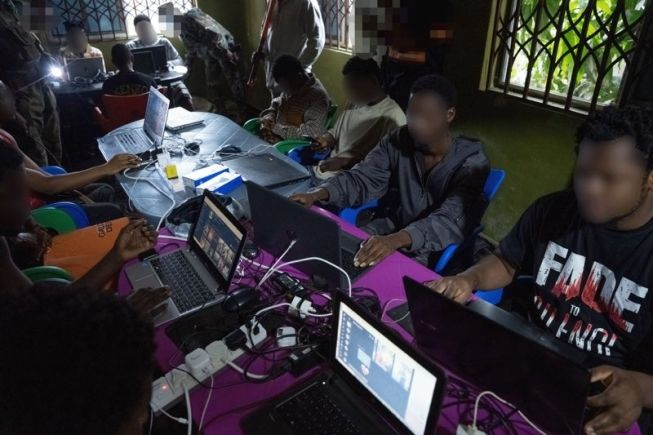
Cyber Security Authority rejects FBI claims over Ghana cybercrime operation
Ghanaian officials state local security agencies led Operation Blackout, which rescued one hundred and twenty victims.
EducationChief Justice charges 1,568 new lawyers to protect integrity
Chief Justice Paul Baffoe-Bonnie warns newly called lawyers against unverified digital commentary and bribery.
HealthGhana targets recruitment of 16500 health professionals in 2026
Financial clearance has been secured ahead of time so newly hired workers receive prompt pay, officials say.
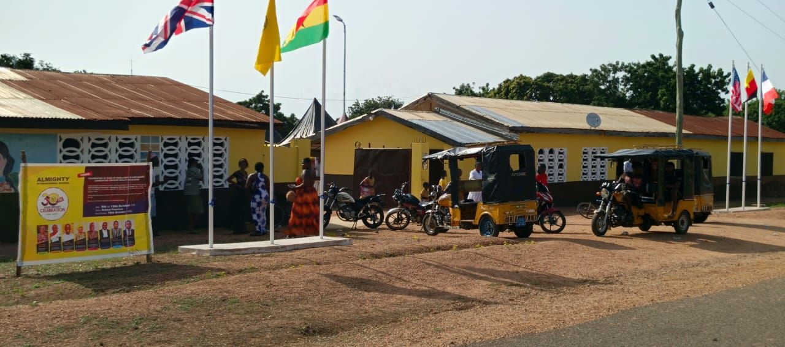
Almighty International School marks 30 years and cuts sod for classrooms
The Krachi West private institution seeks public and private support to expand its campus following three decades of operation.
PoliticsMahama commends Roads Minister during Ahafo bridge visit
The president expects Big Push infrastructure contracts awarded by late 2025 to be finished by the end of 2027.
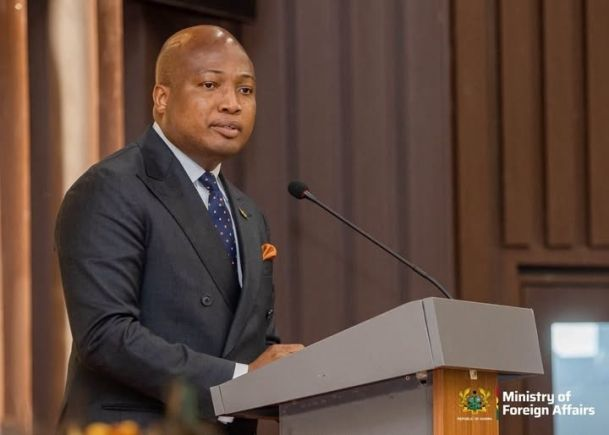
Ghana Seeks BRICS Partner Status Not Full Membership
Foreign Minister Samuel Okudzeto Ablakwa says applying as a partner country protects traditional alliances while advancing development.
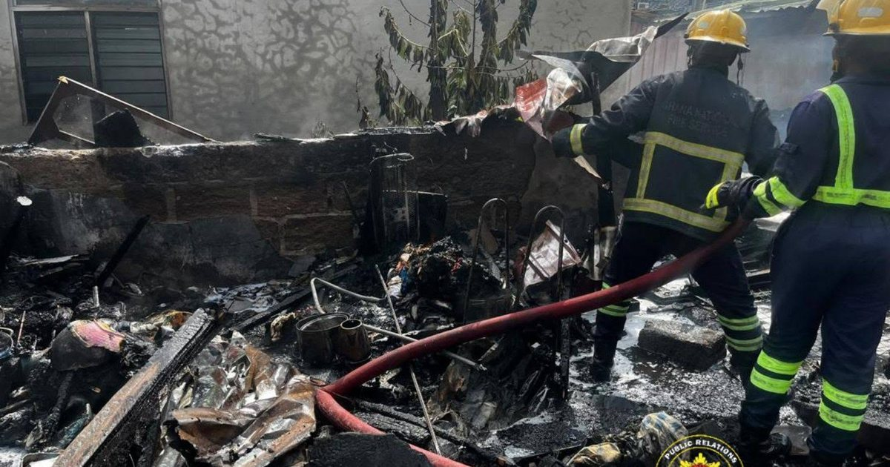
Fire destroys wooden structure near La church on Bush Road
Firefighters saved the nearby Calvary Apostolic Revival Church while extinguishing a morning blaze in the La Dade-Kotopon Municipality.
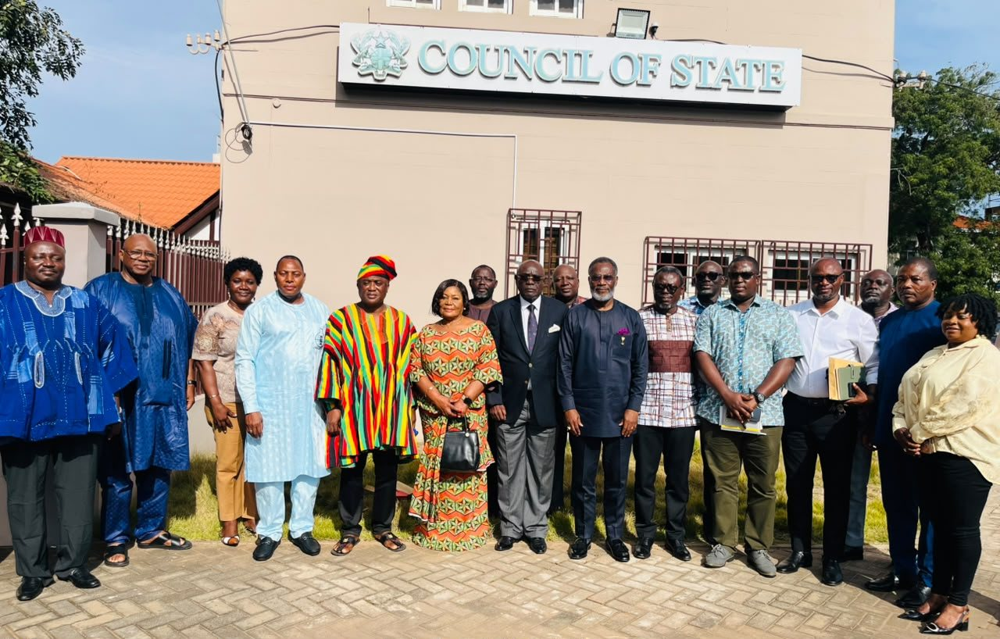
Ghanaian teachers suspend two-week strike to resume classes Monday
Public schools will reopen after government agreed to a clear payment schedule for promotion arrears and allowances.
PoliticsGhana Tourism Authority denies taking money for World Cup visas
The Minority wants GTA chief Maame Efua Houadjeto suspended over a list that tied more than 30 people to a board of about 11.
BusinessMahama says Bechem poultry plant will make town Ghana’s chicken capital
The half-built poultry, meat and feed factory should be running by the end of March 2027, and the government is telling local youth to start rearing birds.
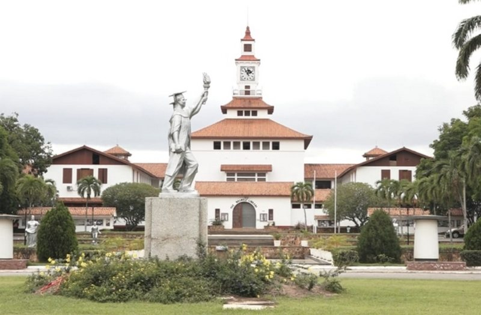
University of Ghana lecturers threaten strike over unpaid allowance
UTAG-UG says its 2026 Book and Research Allowance is overdue under a 2020 agreement and has set government a Friday, 16 October deadline.
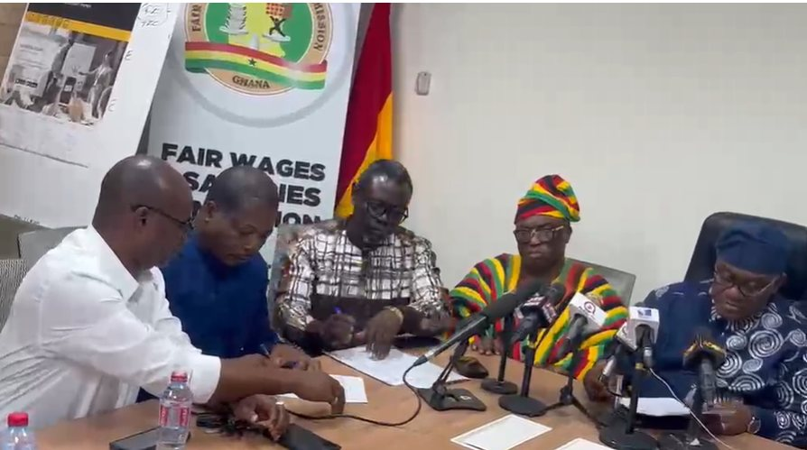
Ghana teacher unions suspend strike, classrooms reopen Monday
GNAT, NAGRAT and PRETAG signed a deal with the Fair Wages Commission on promotion arrears and allowances but say talks on other demands continue.
PoliticsGhana moves up to Tier 1 in US human trafficking report
Prosecutions and victim rescues rose sharply in 2025, but the US report says shelters for survivors are still too few and recruitment fees are not banned.
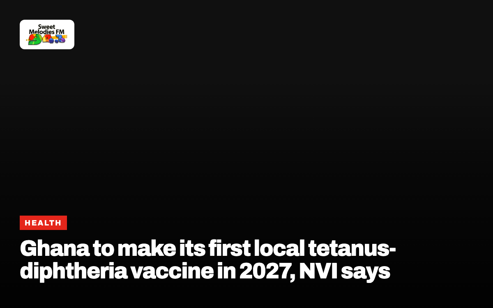
Ghana to make its first local tetanus-diphtheria vaccine in 2027, NVI says
Production has begun at Atlantic Lifesciences under a deal with Indonesia’s PT Bio Farma, which freed about US$400,000 in Indonesian support.
GNA WireAll →
- Ghana calls for stronger African cooperation to tackle maritime threats 5 hr ago
- Ghana cybercrime operation arrests 19, uncovers US$8.3m in scam losses 7 hr ago
- CEO of Warrior King Watches receives Innovative Excellence Award at HAPAwards 8 hr ago
- GES interdicts Obuasi SHS headmaster over alleged sexual misconduct 9 hr ago
- NEDCo replaces faulty transformer at Saasigli 9 hr ago
- AG urges Legal Aid Commission to expand services to districts 9 hr ago
- DPC flags six companies for data protection breaches 9 hr ago
- We must accelerate deployment of digital technology to… – ACP Obeng 9 hr ago
- STMA to build dedicated cycling lanes to promote cycling 9 hr ago
- Trust-building is crucial for sustaining confidence with communities – Police Commander 9 hr ago
- Volta Region begins 20-year spatial development framework 9 hr ago
- Togbui James Ocloo appeals to President Mahama to prioritise WACA Project 9 hr ago